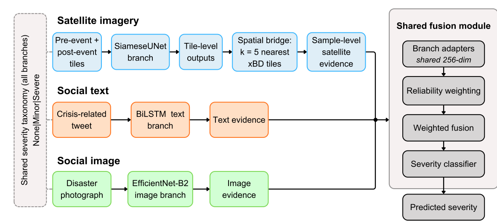
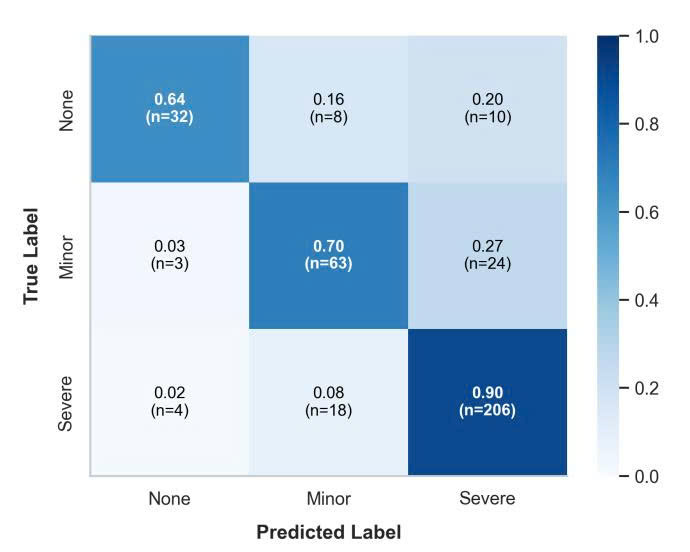

TriFuse-R: Reliability-Aware Multimodal Fusion for Disaster Damage Assessment
1 National Economics University, Hanoi, Vietnam | 2 HUTECH University, Ho Chi Minh City, Vietnam
3 Hanoi University, Hanoi, Vietnam | 4 Institute of Intelligent Interactive Technologies, UEH University, Vietnam
5 Foreign Trade University, HCMC Campus, Vietnam | 6 VNU University of Science, VNU Hanoi, Vietnam
Springer Lecture Notes in Computer Science (LNCS) / CCIS Proceedings • SOICT 2026
Framework & Visual Architecture
Reliability-Aware Trimodal Evidence Fusion Architecture
TriFuse-R dynamically integrates satellite imagery, humanitarian tweets, and ground photos by quantifying prediction confidence and spatial-semantic uncertainty.

Figure 1: Complete architecture of the TriFuse-R framework. Bi-temporal satellite pairs ($\mathbf{I}_{pre}, \mathbf{I}_{post}$) are processed via Siamese U-Net, situational tweets through RoBERTa-base, and ground photos via EfficientNet-B2. Modality reliability $r_m$ is derived from predictive confidence and spatial-semantic entropy, dynamically aggregated using temperature-scaled softmax attention ($\tau = 0.5$) with gated feature adapters.
Abstract
Rapid post-disaster damage assessment is essential for emergency response and relief allocation. While multimodal models combining satellite remote sensing and social sensing offer promising situational awareness, prevailing approaches rely on equal-weight fusion or naive concatenation, ignoring substantial variations in modality reliability due to cloud obscuration, revisit latency, and noisy crowdsourced reports.
We propose TriFuse-R, an end-to-end reliability-aware trimodal evidence fusion framework that dynamically integrates satellite imagery, humanitarian social text, and ground photographs for damage severity assessment. We establish an aligned multimodal benchmark across Hurricane Harvey and the Mexico Earthquake harmonized into a three-tier taxonomy (None, Minor, Severe) supported by multi-annotator verification (Fleiss' $\kappa = 0.84$).
Stratified 5-fold cross-validation across all $N = 368$ samples demonstrates that TriFuse-R achieves 81.8% accuracy and 76.8% Macro-F1, significantly outperforming unimodal backbones and equal-weight fusion ($p = 0.008$) with 32.8% lower calibration error. Controlled missing-modality analyses against re-normalized baselines confirm the operational resilience and fault tolerance of our framework under sensor degradation.
Key Insights
Direct concatenation or $1/3$ static weighting assumes all sensors are equally dependable. In real crises, cloud cover, sensor noise, or vague tweets inject uncalibrated noise directly into decision pipelines.
TriFuse-R computes scalar reliability scores $r_m \in (0, 1]$ using both prediction confidence and predictive entropy $H_m$. Corrupted or ambiguous streams are smoothly suppressed without losing complementary cues.
When a sensor fails or an image is missing, TriFuse-R re-normalizes attention over surviving channels at test time without retraining or zero-imputation artifacts.
Technical Formulation
How TriFuse-R Models Multimodal Reliability
Mathematical grounding of predictive confidence, spatial-semantic entropy calibration, temperature scaling, and gated modulation.
Satellite Reliability
Estimates change detection between pre- and post-disaster tiles ($\mathbf{I}_{pre}, \mathbf{I}_{post}$). Formulates $r_{sat}$ by penalizing spatial prediction entropy across all $N$ pixels:
Text Reliability
Extracts situational cues from tweets. Quantifies reliability by coupling maximum predictive probability with normalized semantic predictive entropy:
Image Reliability
Captures ground-level structural destruction (facade cracks, debris). Combines model predictive confidence with crowdsourced annotation consensus $a_{img}$:
Calibrated Temperature Scaling & Gating
Rather than treating all modalities identically, scalar reliability scores are normalized into attention weights via a calibrated temperature hyperparameter $\tau = 0.5$. Each modality embedding is modulated via channel gating adapters $\tilde{\mathbf{f}}_m$ before aggregation:
Dynamic Fault Tolerance at Test-Time
When sensors fail in actual disaster deployments (e.g., dense cloud cover over satellites or network loss preventing tweets), TriFuse-R masks missing channels ($r_k \to -\infty$) and dynamically re-normalizes attention across available streams $\mathcal{M}_{avail}$ without retraining:
Benchmark Construction
Tripartite Spatio-Temporal Alignment & Harmonization
Unifying xBD, HumAID, and CrisisMMD under a verified three-tier disaster severity taxonomy with high inter-annotator agreement.
Harmonized Three-Tier Severity Taxonomy Mapping
Fleiss' κ = 0.84| Standardized Tier | xBD (Satellite) | CrisisMMD (Ground Photos) | HumAID (Crisis Tweets) |
|---|---|---|---|
| None | no damage | little or no damage | Informational, sympathy, logistic updates |
| Minor | minor damage | mild damage | Localized blockage, light structural impairment |
| Severe | major damage, destroyed | severe damage | Structural collapse, casualties, urgent rescue calls |
Spatio-Temporal Windowing
Temporal filtering restricts candidate samples to $\pm 48$--$72$ hours post-event. Geocoded posts are mapped to satellite tiles via spatial nearest-neighbor bridge ($k=5$ within radius $R \le 2$ km).
Semantic & Visual Filtering
Keywords (collapse, flood, debris, destroyed) identify relevant tweets. Non-structural images (memes, infographics, portraits) are systematically pruned.
Multi-Annotator Verification
3 independent researchers verified alignment fidelity (Cohen's $\kappa = 0.81$). Only triplets with corroborating satellite change, ground photos, and text reports were retained.
Empirical Validation
Quantitative Evaluation & Statistical Significance
Rigorous stratified 5-fold cross-validation on all $N=368$ samples with 95% bootstrap confidence intervals ($B=1,000$).
Table 1: Damage Severity Assessment Performance on Aligned Benchmark ($N = 368$)
Primary metric: Macro-F1 (%)| Method / Architecture | Accuracy (%) | Macro-F1 (%) | Weighted-F1 (%) | ECE ↓ |
|---|---|---|---|---|
| Satellite Only (Siamese U-Net) | 69.4 | 62.1 | 68.2 | 0.103 |
| Text Only (BiLSTM) | 68.2 | 63.8 | 67.5 | 0.095 |
| Text Only (RoBERTa) | 73.1 | 68.4 | 72.2 | 0.081 |
| Image Only (EfficientNet-B2) | 77.6 | 72.8 | 76.9 | 0.072 |
| Equal-weight Fusion (with Gating) | 79.1 | 74.1 | 78.9 | 0.061 |
| Reliability Fusion (Uncalibrated) | 80.4 | 75.2 | 80.1 | 0.055 |
| TriFuse-R (Ours, τ = 0.5) | 81.8 | 76.8 | 81.5 | 0.041 |
Figure 2: Confusion Matrix Out-of-Fold (N=368)

Evaluated across all 368 out-of-fold benchmark samples. Note the minimal confusion between extreme severity tiers (None vs. Severe), ensuring robust operational safety in disaster triage.
Table 2: Ablation & Temperature Sensitivity Component Analysis
| Configuration Variant | Macro-F1 (%) | ECE ↓ |
|---|---|---|
| Full TriFuse-R (τ = 0.5) | 76.8 | 0.041 |
| τ = 0.2 (Hard Modality Gating) | 74.5 | 0.058 |
| τ = 1.0 (Standard Softmax) | 75.9 | 0.049 |
| τ = 2.0 (Over-Smoothed Weights) | 74.8 | 0.056 |
| τ → ∞ (Equal-Weight w/ Gating) | 74.1 | 0.061 |
| w/o Uncertainty Calibration ($H_{sat}, H_{txt}$) | 75.2 | 0.055 |
| w/o Crowd Annotation Confidence ($a_{img}$) | 75.5 | 0.052 |
| w/o Gated Adaptation ($\tilde{\mathbf{f}}_m$) | 75.6 | 0.048 |
| Random Reliability Weighting | 68.1 | 0.089 |
Table 3: Controlled Missing-Modality Stress Test at Test Time
Evaluating resilience across all partial and unimodal fallback scenarios without retraining.
| Available Sensor Channels | Static Equal-Weight (Zero-padded) | Re-normalized Equal-Weight | TriFuse-R (Ours, Calibrated) | |||
|---|---|---|---|---|---|---|
| Acc (%) | Macro-F1 (%) | Acc (%) | Macro-F1 (%) | Acc (%) | Macro-F1 (%) | |
| Complete Trimodal (Sat + Txt + Img) | 79.1 | 74.1 | 79.1 | 74.1 | 81.8 | 76.8 |
| Satellite + Image (Text Missing) | 75.8 | 70.4 | 77.2 | 72.3 | 79.3 | 74.6 |
| Text + Image (Satellite Missing) | 74.5 | 69.2 | 76.4 | 71.0 | 78.5 | 73.9 |
| Satellite + Text (Image Missing) | 62.2 | 54.8 | 67.5 | 65.4 | 71.7 | 70.2 |
| Image Only Fallback | 63.9 | 58.2 | 73.5 | 67.8 | 77.6 | 72.8 |
| Text Only Fallback | 58.4 | 52.4 | 68.9 | 63.8 | 73.1 | 68.4 |
| Satellite Only Fallback | 53.0 | 47.9 | 64.2 | 57.5 | 69.4 | 62.1 |
Reference & Citation
BibTeX Citation
If you find TriFuse-R or our aligned benchmark helpful, please cite our SOICT 2026 paper:
@inproceedings{Thanh2026TriFuseR,
author = {Tu Hoang Thanh and Thien Nhan Vo and Phung Thi Hien and Ngan Nguyen Xuan Phuong and Ngoc Ngan Huynh and Thanh Xuan Truong},
title = {TriFuse-R: Reliability-Aware Multimodal Fusion for Disaster Damage Assessment},
booktitle = {Proceedings of the 15th International Symposium on Information and Communication Technology (SOICT 2026)},
series = {Lecture Notes in Computer Science (LNCS)},
publisher = {Springer},
year = {2026},
note = {Paper ID: 3550, Accepted for ORAL Presentation}
}
Corresponding Author Inquiries
Thien Nhan Vo • HUTECH University, Ho Chi Minh City, Vietnam